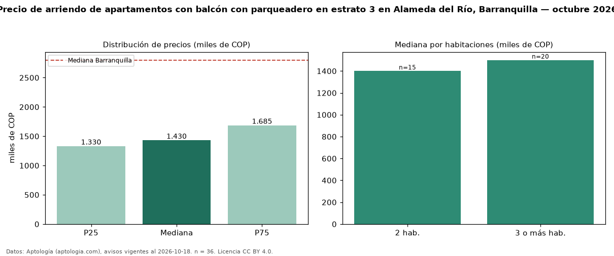

Precio de arriendo de apartamentos con balcón con parqueadero en estrato 3 en Alameda del Río, Barranquilla — octubre 2026
COP 1,43 millones al mes es el canon mediano de apartamentos con balcón con parqueadero en estrato 3 en arriendo en Alameda del Río, Barranquilla (n = 36 avisos). Frente a la mediana de los apartamentos con balcón en estrato 3 en arriendo de Alameda del Río (COP 1,30 millones, n = 99), queda 10 % por encima; este segmento reúne el 36 % de esos avisos. Por metro cuadrado, la mediana es COP 25.081/m² al mes (n = 36), 4 % por encima de los apartamentos con balcón en estrato 3 en arriendo de Alameda del Río (COP 24.118/m²). El área mediana anunciada es 57 m². El segmento con más oferta es el de 3 o más habitaciones (20 avisos, mediana COP 1,50 millones); pasar de 2 habitaciones a 3 o más habitaciones cambia la mediana +7 %. La administración mediana declarada es COP 200.000 al mes (n = 15), aparte del canon. La mediana de todos los apartamentos en arriendo de Barranquilla es COP 2,80 millones (−49 % de diferencia). La mitad central de los avisos va de COP 1,33 millones a COP 1,69 millones (razón 1,3), una dispersión baja. Datos: Aptología (aptologia.com), CC BY 4.0 — https://www.aptologia.com/arriendo/barranquilla/alameda-del-rio. Archivos: PDF, CSV con las cifras y gráfica PNG.

| Avisos únicos | 36 |
|---|---|
| Percentil 25 | COP 1.330.000 |
| Mediana | COP 1.429.726 |
| Percentil 75 | COP 1.685.000 |
| Mediana por m² | COP 25.081 |
Fuente: avisos vigentes de portales inmobiliarios recopilados por Aptología, deduplicados (mínimo 30 avisos únicos por celda). Precios pedidos, no cerrados. Fecha: 2026-10-18.